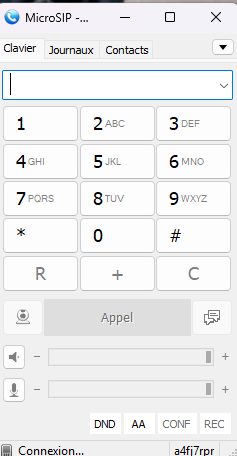
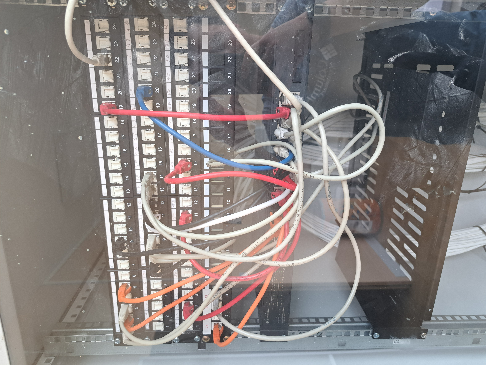
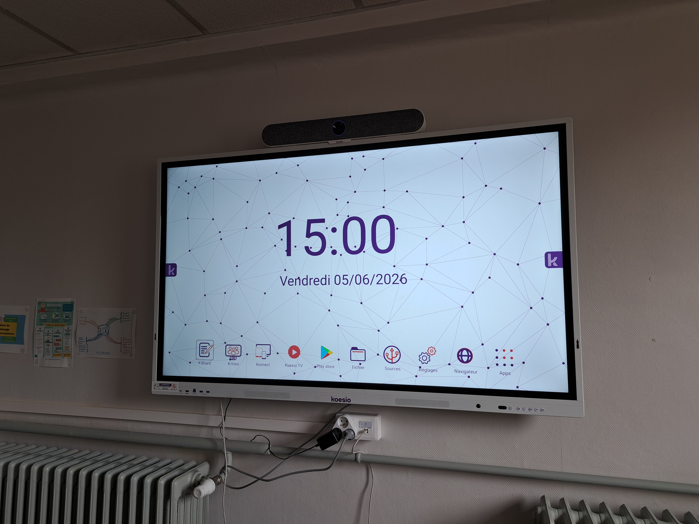

Projet migration réseau :
Mon premier projet, était la configuration et l'installation d'un réseau suite au déménagement de mon entreprise durant une période de travaux le coût de ce projet pour la partie informatique est d'un peu plus de milles euros :
- Inspection du chantier à plusieurs étapes :
-
Plan du deuxième étage :

- Installation d'un SoftPhone, avec le logiciel MicroSip sur les ordinateurs du personnel :
-
Ce logiciel, permet aux agents de pouvoir téléphoner via leur ordinateur de la même manière qu'avec leurs téléphone de bureau. Pour cela j'ai dû créer sur le standard des lignes téléphonique puis je l'ai associées au logiciel et fait en sorte que lorsque l'agent appel depuis son téléphone de bureau ou le SoftPhone le même numéro externe s'affiche et mon tuteur a mis en place une combinaison de touche pour passer de l'un à l'autre :

- Câblage de la baie de brassage et test de liaison baie et prises RJ45 dans les bureaux :
-
Arrivé des câbles dans la salle où ce trouve la baie de brassage :
 Prise qui seront placées dans la baie de brassage :
Prise qui seront placées dans la baie de brassage :
 Configiration des prises pour le bureau des agents composé de quatres prises électrique, ainsi que deux prises RJ45 :
Configiration des prises pour le bureau des agents composé de quatres prises électrique, ainsi que deux prises RJ45 :
 Baie de brassage terminée :
Baie de brassage terminée :

- Changement de l'addresse IP des imprimantes, dans les paramêtres des ordinateurs du personnel :
- Contrôle de l'état de l'écran de la salle de réunion après son transport du pole administratif, à l'école Mazeline.
- Lors du déménagement l'écran interactif de la salle de réunion a été déplacé dans la salle de réunion de l'école Mazeline, j'ai dû lors de son arrivé sur place le tester afin de vérifier qu'il était toujours entièrement fonctionnel :

| Tâche | Temps prévu |
|---|---|
| Planification des emplacement des arrivés fibre et câbles RJ45 | 0,5 jours |
| Mise en place de la baie de brassage | 3 jours |
| Déménagement et mise en palce du matériel du personnel | 2 jours |
Lors de cette partie du projet, nous avons inspecter les anciens locaux de l'entreprise MTB111 dans lesquel nous avons déménagé. La première étape, était de faire le tour des locaux afin de déterminer les besoins précis pour acceuillir les agents. Après concertation avec les services techniques pour connaitre la disposition des bureaux et définir les câbles à mettre en place, nous avons suivi les étapes pas à pas. Les étapes sont les suivantes : passer un câble RJ45 du deuxième étage jusqu'à la box internet de l'école pour acheminer internet jusqu'à notre routeur dans la baie; faire le point avec l'électricien pour l'installation des nouveaux câbles et raccordement des prises RJ45; assemblege des différents éléments de la bai de brassage (installation des prises dans les bandaux); et enfin raccordement du routeur avec le switch puis des prises au switch en fonction de l'endroit où les agents souhaitaient placer leur bureau.
Lors du déménagement, les imprimantes qui ont été mises à Mazeline on changer d'adresse IP nous avons dû changer ces adresses dans les paramêtres des ordinateurs des membres du personnel.